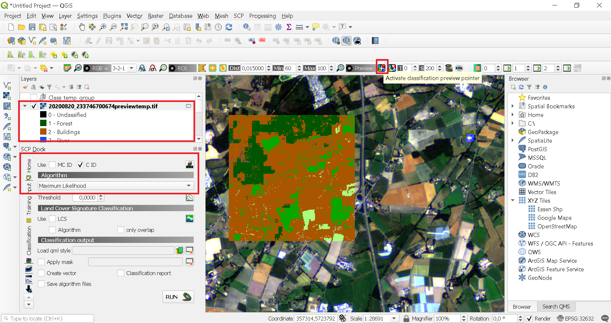

Image Classification
Create Training samples
Now its time to create training input. To do so click on Training Input > click Create a new training input as shown below. Give a name and an output location to save it
Now we will create training samples for different classes in this imagery. We will create four classes in this image namely:
- Water
- Vegetation
- Baren Soil
- Settlements
Here we have two types of classes - Macro class and Class. The difference between them is that Macro class is the head class of the class.
So, lets start with creating the training samples for the Region of Interests ROI. Click on the Create a ROI polygon. There are two ways to do so this, one is to create it manually by drawing polygons for each class and the other is to create it automatically just by playing with the Spectral Distance Value
First, we will do it manually
It will activate the creating ROI manual polygon. Left click to start the polygon and right click to end it. Below you can see we have a created our first polygon for one class
Now save this training sample by setting the Macro class and Class information and save it
By saving it will save the information such as color, ID and type. In the image below we can see that Forest is the Class of Macro Class (Vegetation). Try to take as much training samples you can as it will make better the accuracy of your classification, at least take 10 to 20 training samples. You can create more training samples of the same class by using the same method except by not changing its Macro Class ID (MC ID) and Class ID (C ID). These should be the same for one class no matter how many training samples you are creating
We can see the information about the Macro Class and Class. In the image below Vegetation is the Macro Class of the Class (Forest)
Second method of creating training samples of the ROI by using the ROI algorithm. It is much easier and quicker then drawing a polygon for each ROI. This algorithm selects all the pixel as a ROI in an image with the spectral distance less than the specified limit such as 0.1 in this case
Spectral Signature:
It is the amount of reflected energy measure by the remote sensing technology. Different objects have different spectral response or values such as Water bodies have different spectral values then Vegetation and urban areas. So, by using this spectral signature values we can classify an image into different classes.
By using the ROI algorithm select the spectral distance of your choice for example in this case we set it 0.08. After setting the Spectral distance click on any where in the image as shown below. It will make polygons of the region with the spectral distance less then 0.08 in that limited area
Set its Macro class and Class name along with their ID´s. ROI has been created for the Built up class in the image as a black region can be seen below. So it quickly create the ROI´s on the bases of the spectral distance values
The spectral distance has to be set on by doing your own observation. Just play with its value increase it or decrease it and observe that which area it is taking in ROI`s and which is skipping it. Try to set its value as fit as possible so that it can take the exact area of ROI which it should. By changing its spectral distance value, you can see the result for the water bodies as below
Again, take at least 10 to 20 training samples for this class by following the same instructions above.
Follow the same steps and create another class with the Macro class name (Vegetation) and Class name (Agriculture)
Create a Macro class with the name Barren Soil and Class with the name Low Vegetation

Take 10 to 20 training samples for this class too by not changing its Macro and Class ID.
That’s all we have finished the training samples for the ROIs by creating these four Macro Classes.
Now we can see each Class spectral values by selecting all the Classes and click on the Add highlighted signatures to spectral signature plot
After clicking on the highlighted signature, you can see each class signature in the plot. We can show and hide spectral signature plot of each class by checking and unchecking the box. We can compare and assess the spectral distance by observing the plot
We can also display the whole statistics of the spectral distance by clicking on Calculate spectral distances
We can change colour for each class by double clicking on the colour of the class
After changing the colours, we can see each class

All is set now we are going to use the classification algorithm. There are three algorithms here from which we can select. Here we will select the Maximum Likelihood Classification.
Maximum Likelihood Classification
This algorithm used to predict the class label y that maximizes the likelihood of our observed data x (Training samples of the ROI).
By activating the Classification preview we can see our image classification classes. Click on any area in the image and it will show you the classification preview. Classes can be seen on the left side. We have used Class ID which is the subclass of the Macro Class. Classification preview will help us in the verification of the classified image. If we are satisfied with the classification preview, we can run it and the image will be classified otherwise select the ROIs again for a better and accurate classification.
Once we are satisfied with the classification, we can create an output of the classification by clicking on the Run tool and give output location and name

We can also select the Macro class ID to show the classification preview of the Macro class.
Once we are satisfied with the classification, we can create an output of the classification by clicking on the Run tool and give output location and name
It is saved as a tiff format which can be open in QGIS. In this classification there could be some accuracy limitation such as assigning the wrong class to an area. As you can see that Built up and Water class is appearing too much in the classified image. It is because that we have only taken one ROIs and training sample for each class. We did so because it would take much time for you to follow each ROI creation. Therefore, we have just showed you how to do it accurately by creating a greater number of ROIs. Remember the more the number of training samples the better is the classification.
You can save it in many formats
Click on the format and you will see a list of formats which you can export this output